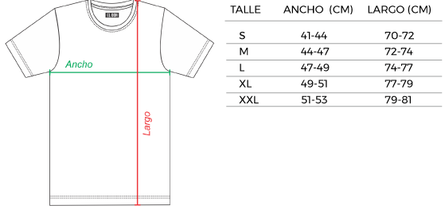
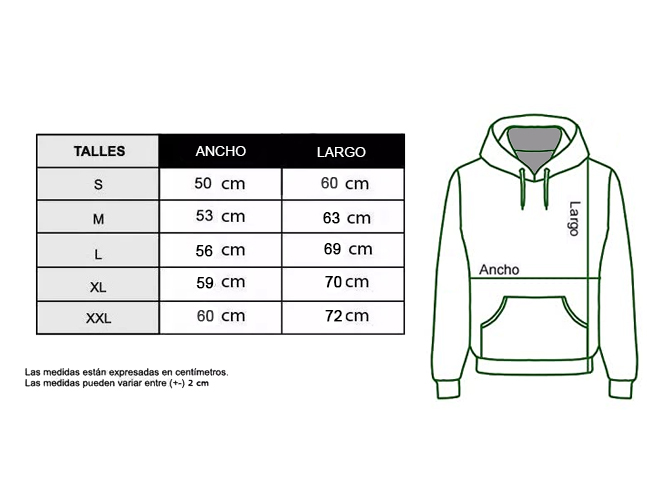

Talles
Remeras
- Para saber cual es tu talle segui estos pasos:
- Ancho de hombros: Tomar la medida de hombro a hombro, justo sobre el hueso que sobresale del mismo.
- Contorno de busto: Rodea tu busto con una cinta metrica flexible en la parte de mayor volumen.
- Contorno de cintura: Rodea la parte mas estrecha de tu cintura con una cinta metrica.
- Contorno de cadera: Estando de pie, con los pies juntos, rodea la parte de mayor volumen de tu cadera con una cinta metrica.

Buzos
- Para elegir tu talle correcto segui las mismas recomendaciones indicadas para las remeras, anteriormente detalladas.
- Recorda que las medidas deben ser tomadas en linea recta, para que las puedas comparar con las medidas de una prenda tuya y poder definir tu talle correcto. Si no estas seguro no dudes en contactarte con nosotros!.
- Buzos confeccionados en suplex frisado y elastizado, ideales para todas las estaciones porque son abrigados pero livianos.
- En el cuadro se muestran medidas del cuerpo promedio utilizado para el desarrollo de cada producto. Norma IRAM 75300-3:2019.
